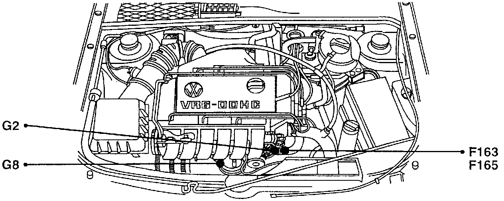
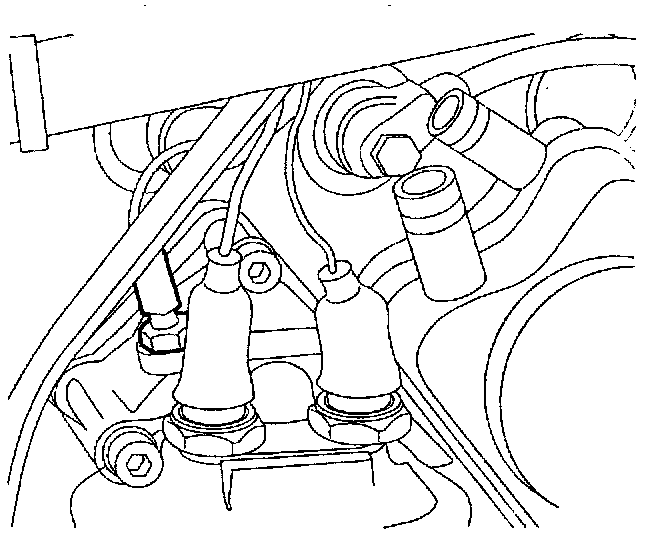

Operation CHARM
: Car repair manuals for everyone.
Home
>>
Volkswagen
>>
1997
>>
GTI (1H1) V6-2.8L (AAA)
>>
Repair and Diagnosis
>>
Engine, Cooling and Exhaust
>>
Engine
>>
Sensors and Switches - Engine
>>
Oil Temperature Sensor/Switch
>>
Locations
Oil Temperature Sensor/Switch: Locations
F163, F165, G2, G8:

Component Location View
G8:

Component View
G8 Engine oil temperature sensor
-
On upper oil filter housing, right-rear
-
To rear of switch F1